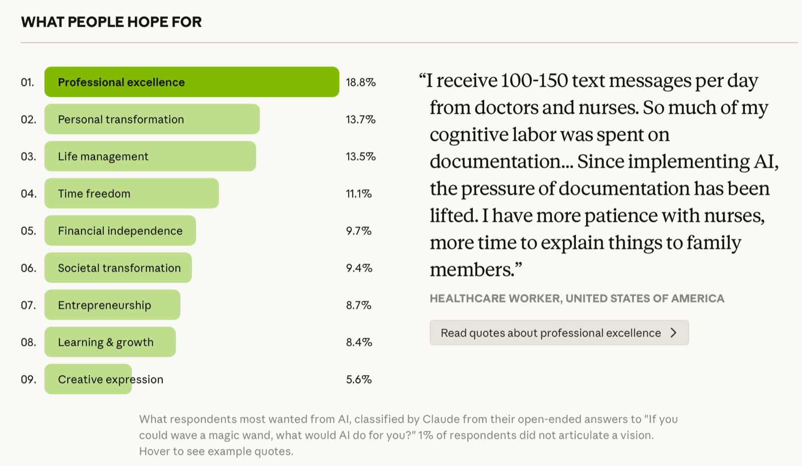
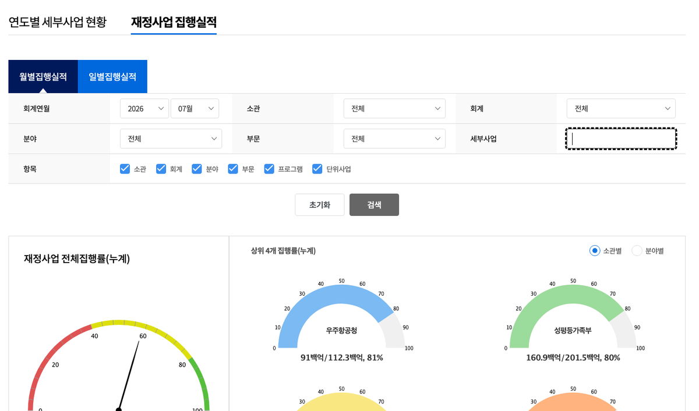
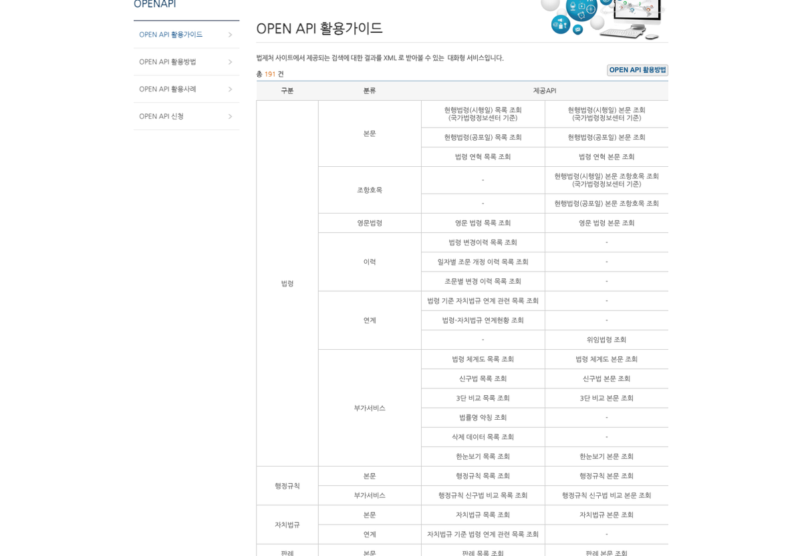

1절 왜 지금인가 — 검토보고서 쓰는 일은 어디까지 바뀌나 2절 에이전트란 무엇인가 — 부품과 루프 3절 ▶시연 — 실제 운용 팀과 예결위 업무 적용 4절 공개된 킷으로 부품 뜯어보기 5절틀리면 안 되는 것을 규칙으로 굳힌다
2부 실습 — 스킬 · 킷 · 내 에이전트
준비 설치/셋팅 · 작업 폴더 · 전역 설치 개념 실습1 교정 스킬(paper-proofread) 설치·실행 실습2보고서 쓰는 AI 팀(킷) 설치 — 브리프 가동 실습3내 업무용 에이전트 기획안 작성과 바이브코딩
오늘 가져갈 것 — 원리(에이전트·스킬을 읽고 고치는 눈) · 규칙(틀리면 안 되는 것을 강제하는 법) · 내 것(담당 업무용 개조판)
용어플러그인 — 에이전트 팀·작업 절차를 통째로 담아 명령 한 줄로 설치하는 꾸러미. 오늘의 실습 재료다
01
SECTION 1
왜 지금인가
보고서 쓰는 일은 어디까지 바뀌나 — 기대와 불신 사이
1절 · 왜 지금인가
'단순 챗봇 시대'의 종언
묻고 답하는 챗봇에서 스스로 일하는 에이전트로
🚄 연구 현장이 재편된다
Brookings — "기차는 이미 떠났다" · 에이전틱 AI로 20쪽 보고서를 1시간 내 산출Messing & Tucker, 2026.3
📈 해내는 일의 길이가 폭증
METR — 자율로 완수하는 과업 길이 4초(2019) → 16시간+(2026) · 약 7개월마다 2배Measuring AI Ability to Complete Long Tasks, 2025.3
🧭 패러다임이 재정의된다
Anthropic — 목표를 주면 스스로 계획·도구 사용·검증을 반복하는 시스템으로Building Effective Agents, 2024.12
용어에이전틱 AI — 목표를 주면 스스로 계획을 세우고 도구를 골라 실행하며, 결과를 보고 스스로 고치는 AI
출처Brookings 「The train has left the station」(2026.3) · METR 「Measuring AI Ability to Complete Long Tasks」(2025.3) · Anthropic 「Building Effective Agents」(2024.12)
1절 · 왜 지금인가
사람들은 AI에 일을 맡기고 싶어 하면서도, 신뢰를 가장 걱정한다
역대 최대 규모의 질적 연구 — AI 인터뷰어가 159개국 80,508명과 심층 인터뷰한 결과

기대 1위 — 전문성 향상 18.8% · 루틴은 위임하고 전략 업무에 집중 (개인적 성장 13.7 · 생활 관리 13.5 · 시간적 자유 11.1%)
관문① — 잘못된 목차로 가는 비싼 헛작업을 집필 전에 차단 · 관문② — 논리 · 근거 · 타당성 · 정량성 · 출처 실재
★목차 승인 — 자동화 한가운데 박아 둔 사람의 자리 · 기관의 결재·검토 라인을 공정으로 옮긴 것
산출은 표준 보고서(본문 50쪽+)와 단형 정책브리프(4~8쪽)2교시 실습은 시간 안에 완주되는 브리프 모드
github.com/parkjui92/policy-research-kit← 2교시에 이 주소로 설치한다
용어공개 저장소(Apache-2.0) — 소스·예제·검증 기록을 전부 열람·수정할 수 있고 기관 내부 개조판을 만들어도 된다
4절 · 부품 뜯어보기 — 팀 구성
오케스트레이터와 에이전트 팀
역할 (agents/*.md)
맡는 일
예시 프롬프트
조율자 orchestrator ★말을 거는 유일한 창구
한 마디를 받아 팀원을 순서대로 호출·조율
지방재정 건전성 정책연구보고서 써줘
설계자 designer
의도 분석 · 연구질문 · 목차 설계
지방재정 건전성 연구의 목차를 설계해줘
조사관 investigator
통계·문헌·사례 조사 — 모든 사실에 출처 병기
지방채 발행 추이를 출처와 함께 조사해줘
작성자 writer
논증형 본문 집필 · 참고문헌 정리
3장 현황분석 본문을 작성해줘
검수자 reviewer ★
설계 관문 + 초안 검수 — 독립 검증자
초안을 검수하고 수정요청서를 작성해줘
변환가 hwpx-exporter
한글(.hwpx) 변환 · 표 개수 자체 검증
최종본을 한글(.hwpx) 파일로 변환해줘
사람은 맨 윗줄에만 말한다 — 아래 다섯은 조율자가 순서대로 부른다 · 검수자만 설계와 초안에 두 번 등판한다
4절 · 부품 뜯어보기 — 검증자
검증자는 무엇을 보는가 — 챗봇과 갈리는 자리
같은 문장을 놓고 챗봇은 읽고 넘어가고 — 검증자는 열어서 대조한다
용어출처 등급 — 1 정부·기관 공식 / 2 국책연구·학술지 / 3 주요 언론 / 4 블로그·SNS(단독 근거 불가) · 재인용 사슬 — 같은 보도자료를 여러 곳이 받아써 출처가 많아 보이는 현상
4절 · 부품 뜯어보기 — 부품
이 부품만 알면 나만의 AI 팀을 조립할 수 있다
Claude Code를 이루는 핵심 부품 — 예시는 전부 예결위 업무로 바꿔 읽는다
부품
역할
예결위라면
CLAUDE.md
항상 읽히는 업무 매뉴얼 — 역할·규칙·금지사항
"우리 과 보고서 작성 규칙 — 단위는 억원 · 원자료 대조 필수 · 중립 서술"
스킬 Skill
불러 쓰는 작업 절차서(SOP) — 반복 작업의 표준
"시정요구 조치결과 대조 절차"를 한 마디로 가동
슬래시 명령어Slash Command
자주 쓰는 절차의 단축키
/조사분석관 → 수집→정리→표 생성
서브에이전트
독립 컨텍스트의 팀원 — 병렬·전문화
자료조사 담당 · 수치검증 담당을 따로 고용
훅 Hook
정해진 시점의 자동 규칙 — 잊어도 지켜짐
저장할 때마다 수치 표기 규칙 자동 점검 · 원본 수정 차단
틀CLAUDE.md + 스킬 + 명령어 + 서브에이전트 + 훅 = 나만의 에이전트 — 앞 절 시연의 팀과 이 절의 킷이 그 실물이다
4절 · 부품 뜯어보기 — CLAUDE.md
CLAUDE.md — 매번 반복하던 것을 규칙으로
에이전트에게 주는 "업무 매뉴얼" — 한 번 적어 두면 모든 대화에서 자동으로 읽힌다
없으면
있으면
매 대화마다 처음부터 다시 설명
한 번 적으면 계속 유지
사람마다 달라 품질이 들쭉날쭉
과 전체가 같은 표준
새 대화를 열면 맥락이 초기화
맥락이 영속된다
## 정책연구보고서 작성 규칙 (이 폴더의 모든 작업에 적용)1. 분석틀 승인된 목차와 분석틀을 따른다 — 구조를 임의로 바꾸지 않는다
2. 논증 단락마다 무엇이 문제인가 → 왜 그런가 → 그래서 무엇을 해야 하는가
3. 대안 단일안을 단정하지 않는다 — 효과성·실현가능성·비용·수용성으로
비교한 뒤 권고안과 근거를 제시한다
4. 정량 "개선"이 아니라 "X에서 Y로(△Z%)" — 근거가 없으면
[보강 필요]로 표시하고 지어내지 않는다5. 출처 인용한 사실에 (출처: …)를 단다 — 기준연도와 정의를 본문에 반영
6. 문체 결정자가 5분에 핵심을 잡도록 두괄식 — 현학적 표현을 피한다
7. 제언수단·주체·재원·일정·기대효과까지 적는다
8. 금지 미공개 자료를 넣지 않는다 · 출처 없는 수치를 쓰지 않는다
한마디로 — 신입에게 주는 온보딩 문서
위치파일 하나(./CLAUDE.md)를 작업 폴더에 두면 끝 — 오른쪽은 오늘 배포하는 정책연구 킷의 집필 규율을 작업 폴더 규칙으로 옮긴 것 · 예결위판(재정 수치 규칙)은 5절에서 본다
4절 · 부품 뜯어보기 — 실물
에이전트는 코드가 아니라 업무기술서 — md 파일 한 장이다
policy-research-kit을 열면 — 안에 있는 것은 전부 사람이 읽는 파일이다
policy-research-kit/
├── agents/ ← 팀원 다섯의 업무기술서
│ policy-research-designer.md 설계자
│ policy-research-investigator.md 조사관
│ policy-report-writer.md 작성자
│ policy-report-reviewer.md 검수자
│ hwpx-exporter.md 변환가
├── skills/ ← 절차서 여섯
│ 조율 · 설계 · 조사 · 집필 · 검수 · 한글 변환
├── examples/ ← 전 과정 산출물 실물 두 벌
├── docs/ ← 설계 문서 · 순정 대비 실측 기록
└── README.md ← 설치와 사용법
md 파일 수 = 팀원 수 — 역할·절차·금지사항이 문장으로 적혀 있다
사람에게 하는 인수인계가 곧 에이전트 정의
파일이라 복사 · 수정 · 버전 관리가 전부 된다
블랙박스가 아니다 — 검수 기준·조사 규칙까지 열어 고친다
예결위라면 — 같은 자리에 검토보고서 목차와 급소 검수 기준을 넣으면 그대로 우리 팀이 된다
시연여기서 파일 하나(policy-report-reviewer.md)를 라이브로 열어 본다 — 다음 장이 그 파일이다
4절 · 부품 뜯어보기 — 마크다운
그 파일을 열어 본다 — 기호 몇 개가 전부다
킷의 검수자 파일 — 특별한 문법이 아니라 제목 · 목록 · 굵게 세 가지로 되어 있다
agents/policy-report-reviewer.md — 실물 발췌# 정책연구 검토관 — 두 관문을 지키는 사람← # 은 제목## 모드 2 — 초안 검수 (집필 후)← ## 은 하위 제목
1. **논리 정합성** — 현황→쟁점→대안→제언이 이어지는가 ← 1. 번호 목록
2. **근거 충실성** — 사실 주장에 출처가 있는가
3. **정책 타당성** — 수단·재원·주체가 현실적인가
4. **정량성·표현** — 수치가 맥락과 함께 제시됐는가
5. **참고문헌·출처 검증** — 본문 인용과 1:1 대응인가
## 작업 원칙
- **위치·문제·해결** — 어디가 / 왜 문제이며 / 어떻게 고치라 ← - 은 글머리표
- **득점 아닌 진실** — 듣기 좋은 말보다 옳은 지적을 ← ** ** 는 굵게
기호
뜻
# · ##
제목 · 하위 제목
- · 1
글머리 · 번호 목록
**굵게**
강조
`코드`
명령 · 파일명
예결위라면 — 이 다섯 축 아래에 회계연도 · 단위 · 분모 · 검산 한 줄을 더 적으면 우리 검수 기준이 된다
용어마크다운(Markdown) — 경량 서식 언어 · GitHub·노션이 표준으로 채택 · "에이전트를 수정한다" = 이 파일을 편집한다
4절 · 부품 뜯어보기 — 스킬
스킬 — 반복하는 지시를 절차서로 굳힌다
매번 길게 설명하던 절차를 파일 하나로 — 다음부터는 이름만 부르면 그대로 실행된다
policy-research-kit/skills/
├── rnd-policy-research-orchestrator 조율 — 팀을 순서대로 부른다
├── policy-research-design 설계 — 연구질문 · 분석틀 · 목차
├── policy-research 조사 — 출처 병기 근거 수집
├── policy-report-writing 집필 — 논증형 본문
├── policy-report-review 검수 — 설계 게이트 + 초안 검수
└── rnd-hwpx-export 변환 — 한글(.hwpx) 생성
스킬 없이는 매번 다시 설명한다 그날그날 품질이 다르고 빠뜨리는 항목이 생긴다
스킬이 있으면 누가 불러도 같은 절차 한 번 만들면 과 전체가 공유한다
절차가 글이라 읽고 고쳐 내 것으로 만든다
예결위라면 — 시정요구 조치결과 대조 · 집행 부진 사업 선별 · 서면질의 회신 취합이 좋은 후보
비유SOP(표준 작업 절차서) — 사람 신입에게 주는 업무 매뉴얼처럼, 스킬은 AI에게 주는 작업 절차서다 · 2교시 실습①에서 교정 스킬 하나를 직접 설치한다
4절 · 부품 뜯어보기 — 스킬 (내 업무 예시)
내 업무도 스킬이 된다 — '시정요구 대조' SKILL.md 뜯어보기
매번 반복하는 내 업무 절차도 파일 한 장으로 굳힌다
# 시정요구 조치결과 대조 — SKILL.md## 언제 부르나
결산 검토 착수 시 · 정부 조치결과 보고 접수 시
## 절차
1. 전년도 시정요구 목록 확보 — 건별 문안 원문 그대로 ← NABOSTATS
2. 정부 조치결과 보고와 건별로 맞대기 (조치완료·조치중)
3. 문안이 비슷해도 이행이 같은지 — 제도 변경으로 확인
4. 유형 판정 — 이행 · 부분 이행 · 형식 이행 · 미이행
5. 해마다 되풀이되는 항목 표시 — 연례 반복
## 산출
대조표 + [확인 필요] 태그 — 인정 여부는 사람이
/시정요구-대조 2025회계연도 조치결과 대조해줘
한 마디로 매번 같은 대조 — 담당·주니어가 불러도 누락 없이
절차가 글(.md)이라 과 표준으로 굳히고 개선·공유
[확인 필요] 태그로 미확정을 스스로 표시한다 — 판정은 사람 몫
2부 실습③(응용 갈래)에서 여러분이 만들 것이 바로 이런 파일 — 오늘 오후, 매일 반복하는 업무 하나를 골라 절차서로 굳힌다
비고설명용 골격 — 3절 시연②의 전수 대조를 절차서로 옮긴 것. 다른 후보는 집행 부진 사업 선별 · 서면질의 회신 취합
4절 · 부품 뜯어보기 — 명령·훅
명령어는 사람이 부르는 자동화, 훅은 조건이 부르는 자동화다
① 명령어 (Slash Command)
절차를 담은 md 한 장 = 새 명령어 하나 — 자주 쓰는 워크플로우의 단축키
/조사분석관 → 수집 → 정리 → 전년 대비 표 생성까지 한 줄
타이핑 몇 글자가 절차 전체를 부른다 — 팀원 누가 불러도 같은 결과
② 훅 (Hook)
파일 저장·명령 실행 전후에 자동 개입 — 사람이 잊어도 규칙은 지켜진다
예: 원본 데이터 수정 시도는 자동 차단 예: 산출물 저장 때마다 수치 표기 규칙 검사 예: 작업 기록을 로그로 자동 축적
검증을 의지가 아니라 구조에 맡기는 방법 — 훅의 예시가 전부 '검증 계열'인 것은 우연이 아니다
비교명령어 = 사람이 부르는 자동화 · 훅 = 조건이 부르는 자동화 — 함께 쓰면 "부르면 돌고, 잊어도 지켜지는" 체계가 된다
4절 · 부품 뜯어보기 — API·MCP
API는 '기계용 창구', MCP는 그 창구에 꽂는 '표준 플러그'
낯선 약어지만 하는 일은 단순하다 — AI에게 지금 이 순간의 원자료를 가져다주는 통로
API — 기관이 낸 기계용 창구
사람은 눈으로 보고 옮겨 적는다 — API는 기계가 곧바로 받아 가는 창구같은 자료, 창구만 다르다
MCP — 창구에 꽂는 표준 플러그
제각각인 창구 규격을 AI 쪽에서 하나로 통일한 어댑터콘센트마다 다른 어댑터 → USB-C 하나로
내 질문"환경부 집행률 뽑아줘"
→
MCP표준 플러그로 연결규격 통일
→
API기관의 기계용 창구열린재정·국회·법제처
→
오늘자 원자료그 수치로 답한다
이 통로가 없으면 AI는 학습된 기억으로 답한다 — 철 지난 숫자의 출처 — 붙이면 오늘자 원자료로 답한다
용어API — 프로그램끼리 데이터를 주고받는 공식 창구 · MCP — AI와 외부 시스템을 잇는 표준 규격(2024.11 공개)
비고배포 자료의 도구 카탈로그에 각 창구의 주소·인증 방식·확인된 서비스명을 정리해 두었다 — 열린국회정보·법령 API는 실제 호출로 응답을 확인한 것이다
4절 · 부품 뜯어보기 — 실물
원료 창구는 이렇게 생겼다
앞 장의 표가 실제 화면으로는 이렇다 — 둘 다 로그인 없이 열린다

열린재정 — 재정사업 집행실적 소관·회계·분야·세부사업으로 좁혀 조회

국가법령정보 — OPEN API 활용가이드 법령·조항호목·신구법 비교 등 총 191건
화면에서 눈으로 보던 것을 API로 받으면 그대로 표가 된다 — 같은 자료, 사람용 창구와 기계용 창구의 차이일 뿐
캡처2026-09-13 직접 캡처 · 열린재정 openfiscaldata.go.kr · 국가법령정보 공동활용 open.law.go.kr
4절 · 부품 뜯어보기 — MCP
MCP는 AI의 USB-C — 공공 API엔 아직 연결기가 드물다
공개 창구를 표준 규격 하나로 AI에 꽂는 연결 통로
한국 공공 API를 붙이는 길
어떻게
언제 고르나
① 직접 래퍼 제작
공식 API 키를 받아 얇은 래퍼를 만든다 — 하나에 한두 시간
기관 업무 · 만들면 팀 자산
② 범용 MCP 활용
웹 조회로 공개 페이지를 읽고 한글·PDF를 처리
키 발급 전에 당장
③ 공개 MCP 사용
korean-law-mcp 법령 검색·조문 대조 · kordoc 한글·PDF 파싱
이미 검증된 영역
기관 업무에는 공식 API + 자체 래퍼가 안전하다 — 공개 MCP는 시점 확인 필수
용어MCP(Model Context Protocol) — AI와 외부 시스템을 잇는 표준 규격 · 래퍼 — 기존 API를 그 규격으로 감싸는 얇은 연결 프로그램
4절 · 부품 뜯어보기 — MCP 도구
바로 붙는 MCP 도구 — 한글 문서·법령을 AI 손에 쥐여준다
오늘 바로 설치해 쓸 수 있는 검증된 공개 MCP들
도구 (MCP)
무엇을 하나
예결위라면
kordoc
.hwp·.hwpx·PDF·엑셀 → Markdown 파싱 (표·수치 구조화)
부처 제출자료·전년 보고서를 AI가 읽게 — 수치 대사의 앞단
korean-law-mcp
법제처 법령·조문 검색 · 신·구 조문 대조
예비비·기금 요건의 근거 조문 확인 · 인용 조문을 현행 원문과 대조
Tiro
회의·공청회 음성 → 회의록.md (화자별·요약)
공청회·간담회 녹취를 구조화된 회의록으로
# 설치도, 사용도 자연어로 "github.com/chrisryugj/kordoc MCP로 붙여줘" · "이 폴더 hwp 전부 마크다운으로 바꿔줘"
원칙 — 원천은 분리하고, 파싱 결과는 검산 가능한 텍스트로 남긴다 — 원본 .hwp는 그대로 두고 AI는 변환본으로 일한다
비고kordoc·korean-law-mcp 핸들 github.com/chrisryugj/kordoc · SeoNaRu/korean-law-mcp · 열린재정·열린국회정보는 MCP가 아닌 OpenAPI라 자체 래퍼(앞 장)로 붙인다 · MCP 존재·유지보수는 시점 확인
4절 · 부품 뜯어보기 — 한 장 정리
요청 한마디가 부품 전부를 차례로 지난다
따로 배운 부품들이 실제로는 한 줄로 이어져 돈다
내 한마디"환경부 집행률 정리해줘"
→
CLAUDE.md늘 지킬 규칙서식·말투·금지사항
→
스킬 · 명령어절차를 꺼낸다/조사분석관
→
에이전트 팀쪼개서 위임조사 · 집필 · 검수
→
MCP · API원자료를 집는다열린재정 · 법제처
→
훅 · 검증자통과한 것만출처 · 수치 대조
→
산출물표 · 보고서 · .hwpx
규칙·절차는 한 번 써 두면 자산 — 다음 요청에도 그대로 쓰인다
손발이 붙어야 오늘자 수치 — MCP·API가 없으면 학습된 기억으로 답한다
검증은 끝이 아니라 공정 안 — 훅은 조건이 부르고, 검증자는 독립으로 판정한다
부품 하나하나가 아니라, 이 한 줄 전체가 '판'(하네스) — 같은 모델이라도 판이 다르면 결과가 갈린다
참고자료원은 API 장의 표 참조 — 예산·결산=열린재정 / 의안=열린국회정보 / 법령=법제처 / 한글문서=kordoc
4절 · 부품 뜯어보기 — 실측
같은 모델, 같은 요청 — 공정이 다르면 오류가 0이 된다
같은 요청을 순정 AI와 검증 팀에 주고 인용을 전수 열람한 실측
감사 항목
순정 AI 단독
검증 팀 (킷)
수치·귀속 오류
2건 + 연도 혼입 1건 — 전량 확정 어조
0건
출처 부착률
60%
100% — 전 주장 인라인
작성 중 원문 열람
0회 — 검색 요약만으로 인용
핵심 수치 전건 확인 후 인용
과정 기록
본문 md 1개
설계·판정·근거·검수 파일 사슬
문장·구성 품질
우위 — 유려함·맥락 폭
골격은 명료, 문장은 담백
출처공개 감사 기록 — 동일 요청·동일 모델, URL 전수 판정표 포함, 프롬프트 공개(재현 가능) docs/vanilla-vs-kit.md
4절 · 부품 뜯어보기 — 정리
같은 모델이라도 '판'이 결과를 가른다
하네스 — 지금까지 본 부품을 하나로 엮은 작업 환경
비유 — 모델은 갓 입사한 인재, 하네스는 회사의 제도직무기술서 · 결재선 · 품질검사 — 같은 인재도 제도가 좋아야 성과를 낸다
같은 AI라도 무엇을 쥐여 주고 무엇을 검증시키느냐가 품질을 가른다
1절의 "그럴듯한 오류"를 잡는 곳도 모델이 아니라 판(검증 장치)이다
방금 본 CLAUDE.md · 스킬 · 서브에이전트 · 검증자 = 전부 이 판의 부품
"자리를 비웠을 때 승부가 난다" — 없으면 실패도 밤새 쌓인다완료조건·자동검증·중단조건이 갖춰진 판이라야 맡길 수 있다
모델 경쟁은 회사들의 몫 — 실무자의 경쟁력은 판을 짜는 능력에서 나온다
용어하네스(harness) — 원뜻은 마구(馬具). 힘 좋은 말(모델)을 일하게 만드는 장구 일체를 뜻하는 업계 용어
05
SECTION 5
틀리면 안 되는 것을 규칙으로 굳힌다
확인을 당부하는 대신, 확인을 건너뛸 수 없게 만든다
5절 · 되돌릴 수 없는 문서
검토보고서의 수치는 회의록에 남는다
숫자는 보고서에서 끝나지 않는다 — 질의가 되고 회의록에 남는다
검토보고서는 소위 심사의 기준선 — 틀린 수치는 심사를 왜곡한다
부처는 자기 사업의 숫자를 반드시 검산한다
그래서 예결위 업무에 AI를 들일 때 첫 질문은 "무엇을 시킬까"가 아니다 — "어디서 틀릴 수 있나"가 먼저다
근거국회법 제84조제3항 — 위원회는 제안설명과 전문위원의 검토보고를 듣고 심사한다
5절 · 급소 지도
수치 하나가 보고서에 실리기까지 지나는 길
틀림은 수치가 갈아타는 자리에서만 생긴다 — 그 자리를 먼저 지도로 만든다
원자료에서 문장까지 갈아타는 자리마다 규칙을 하나씩 박아 두면 — 그 사이에서 AI가 자의적으로 고를 여지가 사라진다
5절 · 급소 지도 — 실물
수치를 넘기기 전에 되묻는 목록
앞 장의 지도를 물음으로 바꾼 것 — 채택 전에 이 목록을 통과시킨다
?회계연도 — 결산연도·집행연도·예산연도 중 무엇인가
?단위 — 백만원인가 천원인가 억원인가. 표 머리에 썼는가
?분모 — 증감률의 분모는 전년 본예산인가 최종예산인가
?예산현액 — 예산액＋전년도이월＋예비비＋이·전용이 맞는가
?집행률 — 분모가 예산현액인가. 이월을 집행에 넣지 않았는가
?이월 — 명시이월·사고이월·계속비이월을 갈랐는가
?회계 — 일반회계·특별회계·기금 중 무엇인가. 기금이 빠지지 않았는가
?기준 — 총계인가 순계인가 총지출인가
?분류 — 12대 분야인가 16대 분야인가. 세부사업 코드가 연도 간 같은가
?검산 — 가로와 세로가 동시에 맞는가. 반올림 전 값으로 계산했는가
?출처 — 확정결산인가 열린재정인가 부처 자료인가
?잠정 — 열린재정 집행실적은 잠정치다. 조회 시점을 썼는가
?인용 — 조문·시정요구 문안·감사원 지적을 원문과 대조했는가
외워서 쓰는 목록이 아니다 — 파일에 박아 넣으면 되묻는 일 자체를 에이전트가 한다
근거국가재정법 제48조(이월)·제90조(세계잉여금)·제17조(예산총계주의), 열린재정 재정용어사전 및 부처별 세출예산/결산 항목 구성
5절 · AI가 특히 위험한 자리
AI의 '깔끔하게 정리하는' 본능이 사실을 무너뜨린다
일반적인 오류는 사람도 낸다 — 문제는 사람은 하지 않는데 AI만 하는 종류가 따로 있다는 것이다
AI가 하는 일
실제로 이렇게 망가진다
왜 사람 눈에 안 띄나
기관명을 통일한다
2025년 집행 주체는 기획재정부, 조치 대상은 재정경제부·기획예산처 — 한 문단 안에서 주체가 갈린다
누가 잘못했고 누가 고쳐야 하는가가 지워진다
△를 정리한다
△는 마이너스 — △7,084의 기호를 떼면 흑자와 적자가 뒤집힌다
숫자는 그대로라 검산에 안 걸린다
단위를 맞춘다
표는 135,077(백만원), 본문은 1,350억 7,700만원 — 옮겨 적다 1,000배가 어긋난다
표와 본문은 따로 읽혀 대조되지 않는다
조문을 줄인다
제26조제1항제5호가목6)에서 한 글자가 틀리면 위반 판단의 근거가 소멸한다
형식이 그럴듯해 원문을 안 열어 본다
전부 "더 보기 좋게 만들려는" 행동 — 금지할 것은 오류가 아니라 정리하려는 습관
근거2025회계연도 결산 검토보고 6개 분책(3,810쪽) 전수 대조에서 확인한 실제 표기
5절 · AI가 특히 위험한 자리
AI가 알고 있는 정부는 지난해 정부다
모델은 배운 시점의 세상을 안다 — 개편·개정 뒤에도 옛 이름과 옛 조문을 내놓는다
AI가 그대로 쓰는 것
실제로는
그래서 무슨 일이 생기나
기획재정부
예산·성과관리는 기획예산처, 결산·국고·세제는 재정경제부로 갈렸다통계는 국가데이터처
조치 요구 대상 기관이 틀린다 — 없는 부처에 시정을 요구하는 문장이 된다
"국가재정법 제8조에 따른 재정사업 성과관리"
제8조는 2021년에 삭제됐다 — 성과관리는 제4장의2(제85조의2~제85조의12)로 옮겨 갔다
근거 조문이 없는 지적이 된다 — 부처가 조문 하나로 반박하면 그 항목은 끝난다
기관 누리집 주소
한국재정정보원은 fis.kr — 널리 인용되는 다른 주소는 운영되지 않는다
각주의 링크가 죽어 있다 — 검증한 적 없다는 표시가 된다
웹에서 열어 보면 3분이면 드러난다 — 확신에 찬 어조라 열어 볼 생각이 안 들 뿐
확인2026-09-13 실제 접속·조문 대조로 확인. 국가재정법 현행은 법률 제21419호(2026. 3. 10. 일부개정, 2026. 9. 11. 시행) — 제8조 자리에 「삭제 <2021. 12. 21.>」로 표시돼 있다
5절 · 강제하는 방법
부탁에서 규칙으로, 규칙에서 검산으로
"수치 조심해줘"는 매번 잊힌다 — 같은 내용을 파일에 적으면 매번 읽고, 코드로 적으면 어길 수 없다
규칙을 지키게 만드는 힘은 문장의 강도에서 나오지 않는다 — 그 규칙이 어디에 적혀 있는가에서 나온다
5절 · 실물 — 파일에 적는다
업무지침에 박아 두는 재정 규칙
앞의 목록을 에이전트가 매번 읽는 문장으로 적으면 이렇다
## 재정 수치 취급 규칙 (어길 수 없음)1. 연도 "작년·올해·내년"을 쓰지 않는다. 2025회계연도 결산처럼 항상 명시한다.
2. 단위 금액에는 단위를 값과 함께 옮긴다. 표 머리에 (단위: 백만원)을 쓴다.
3. 분모 증감률에는 분모를 병기한다. 집행률의 분모는 원자료의 예산현액 칼럼을 쓴다.
4. 구분 회계 구분과 기준을 라벨로 붙인다. 이월은 명시·사고·계속비를 구분해 적는다.
5. 검산 가로와 세로를 코드로 재계산한다. 반올림은 표시할 때만 한다.
6. 표기△는 마이너스다.기관명을 현재 이름으로 통일하지 않는다.7. 인용 조문·시정요구 문안은 원문 대조 전까지 초안이다. 요약하지 않는다.
8. 보안 미공개 부처 제출자료·심사 전 내부자료는 입력하지 않는다.
오늘 아무것도 안 해도 이 블록 하나는 복사해 갈 것 — 이것만으로 절반은 된다
5절 · 실물 — 기계가 검산한다
합계가 어긋나면 작업이 멈춘다
산술은 읽어서 지키는 것이 아니라 — 다시 계산해서 확인하는 것
# 집필가가 표를 만들어 넘긴 직후▸ 검산 게이트 실행 … 표 4종 / 행 186
표1 부처별 세출 결산 가로 OK세로 OK
표2 사업별 집행 현황 가로 OK세로 불일치
└ 합계 2,481,006 ≠ 항목합 2,481,012
차이 6 (백만원) — 반올림 후 합산 흔적
표3 이월·불용 내역 가로 불일치
└ 예산현액 − 지출액 − 이월액 ≠ 불용액
행 27: 이월액이 집행액에 포함된 것으로 보임
표4 전년 대비 증감 분모 미표기■ 게이트 불통과 — 산출물을 내보내지 않음 수정 요청을 작성해 집필가에게 반환합니다.
사람이 표를 더해 보기 전에 기계가 먼저 더해 본다 186행을 눈으로 검산하는 일은 일어나지 않는다
대개 반올림 후 합산과 이월을 집행에 포함에서 걸린다
통과하지 못하면 산출물이 나오지 않는다경고를 띄우고 넘어가게 두면 경고는 읽히지 않는다 — 멈추는 것이 핵심
검산은 LLM이 아니라 코드가 한다 같은 모델에게 "다시 확인해줘"라고 하면 같은 실수를 반복한다
규칙 가운데 기계로 옮길 수 있는 것은 전부 옮긴다 — 사람의 주의력은 기계가 못 하는 판단에 남겨 둔다
5절 · 출처를 고르는 규칙
수치가 서로 다를 때 무엇을 정본으로 삼는가
수치가 어긋나는 일은 드물지 않다 — 미리 정해 두지 않으면 편한 쪽이 섞인다
불일치 원인은 기준시점 · 기준 · 기금 범위 · 사업 재분류원인 없이 '수치가 다름'이라고만 쓰면 답변 한 줄로 무력화된다
한쪽을 고르지 말고 — 둘 다 적고 원인을 쓴다
조용히 한쪽을 고르는 것이 가장 나쁘다
열린재정 집행실적은 결산 검증 전 잠정치확정 결산에서 바뀌면 그 지적은 사후에 틀린 것이 된다
근거열린재정 「재정사업 집행실적」 — 수치는 잠정치이며 결산 검증 절차를 거쳐 변경될 수 있음을 명시. 전월 실적은 통상 매월 26일 이후 조회 가능
5절 · 정리
규칙은 기억이 아니라 파일에 산다
먼저 적는다
무엇을 시킬지보다 무엇이 틀리면 안 되는지를 먼저 적는다 — 급소 목록이 곧 업무지침의 초안이다이 순서를 뒤집으면 규칙은 사고가 난 뒤에야 생긴다
파일이 된다
적은 것은 CLAUDE.md와 절차서가 된다 — 에이전트는 일할 때마다 읽고, 사람은 잊어도 파일은 잊지 않는다과 단위로 복사하면 그대로 과의 표준
기계가 지킨다
기계로 옮길 수 있는 규칙은 검산 게이트로 내린다 — 통과하지 못하면 산출물이 나오지 않는다사람의 주의력은 판단에 남겨 둔다
오늘 이 절에서 가져갈 한 문장 — AI가 만든 수치와 인용은, 원문과 대조하기 전까지 전부 초안이다
연결2부 실습에서 각자 업무의 급소 목록을 적고, 그것을 자기 에이전트의 검수 기준으로 넣는다 — 이 절이 실습의 재료가 된다
1부 마무리 · 경계와 책임
보안 경계를 먼저 긋는다 — 넣지 않을 것부터 정한다
경계를 긋고 나면 공개 자료만으로 할 수 있는 일이 생각보다 많다
기관 도입은 단계적으로 — 개인 학습 → 팀 시험 운영 → 보안 심의·가이드라인 → 확산개인 단계에서 충분히 검증한 뒤 기관 절차를 밟는 것이 정석
비용 구조 — 구독 Pro $20 · Max $100~200/월, API는 쓴 만큼 개인 학습·오늘 실습 수준은 Pro로 충분
API 키는 환경변수로 분리 보관 — 코드·문서에 직접 쓰지 않는다
경계는 시작을 막는 이유가 아니라 — 공개 자료 범위 안에서 오늘 시작하는 이유다
비고기관망·보안 정책 관련 개별 질문은 기관 정보보안 담당 확인 사항 — 오늘 배운 것은 공개 영역만으로도 충분히 가치가 있다
1부 마무리 · 경계와 책임
도구가 아니라 분석관의 판단이 산출물의 책임을 진다
🎯 검증 의무
숫자·인용·법령은 원문 재확인이 기본값 — '그럴듯함'과 '정확함'을 혼동하지 않는다
📋 기록 보존
프롬프트·중간 산출물 보존 — 재현 가능성과 감사 대응 — 킷의 산출물 사슬이 이를 자동화한다
✍️ 귀속
AI 활용 여부는 기관 지침에 따라 표기 — 서명은 사람이 한다
🔐 보안
민감 정보는 처음부터 분리 — 시작 전에 경계를 설정한다
도구는 바뀌어도 책임은 옮겨 가지 않는다 — 검증 · 기록 · 귀속 · 보안이 신뢰받는 사용자의 조건이다
진행1부 끝 — 10분 쉬고 각자 PC에서 팀을 설치한다 · 노트북 전원 · 네트워크 · Claude Code 로그인 상태를 쉬는 시간에 미리 확인
연결위 칸을 채우면 그것이 곧 기획안의 재료 — 다음 장의 기획 프롬프트 [ ] 자리에 그대로 부어 넣는다
2부 · 실습 ③ — 기획안 목차 (읽기용)
기획안(개발명세) 작성 TIP
1. 개요 — 한 줄 정의 · 타겟 · 문제 · 성공 기준
2. 범위 — 첫 버전 포함/제외 (제외 이유까지)
3. 핵심 시나리오 — 입력 → 처리 → 출력을 구체 예시로
4. 예상 기술 병목 — 항목별 문제 / 대응 방안
5. 구성요소 — CLAUDE.md · 스킬 · MCP 목록
6. 하네스 — 폴더 · 권한 · 피드백 루프 · 실패 처리
7. 워크플로우 — 전체 흐름 · 역할·입출력 표
8. 결과물 대시보드 — 무엇을 어떤 화면에
9. 구현 순서 — 무엇부터 만들지 단계별 체크리스트
앞은 "무엇을·왜", 뒤는 "어떻게·검증" — 하네스 설계가 혼자 도는 에이전트를 만든다
비고이 목차는 강사의 실제 기획 템플릿 — 다음 장의 프롬프트가 이 아홉 항목을 채운 기획안을 만들어 준다
2부 · 실습 ③ — 기획 프롬프트 (복사)
이 한 덩어리를 복사해 [ ]만 채우고 붙인다
나는 Claude Code로 [만들고 싶은 AI 에이전트]를 만들려고 해. 같이 기획안을 짜자.
⚠ 코드 구현은 하지 마. 이번 산출물은 기획안 md 파일 1개뿐이야. 모호한 곳은 먼저 나에게 물어봐.[배경]
· 누구를 위한 거냐면: [나 자신이어도 OK] · 왜 만드냐면: [지금 반복하는 작업 / 풀고 싶은 불편]
· 이렇게 되면 성공이야: [무엇을 대신해주면 성공인지]
· 첫 버전은 [딱 이 작업 하나]만 자동화돼도 좋아 — 뭘 뺄지는 네가 제안해줘.
· 할 일 상세: [내 분야의 특성과 노하우, 작업 순서를 듬뿍]
· 입출력 예시: [이런 입력(파일·질문·데이터)] → [이런 결과물] · 제약: [보안 · 비공개 데이터 · 예산 · 시간][기획안은 아래 9항목으로 써 줘]
1 개요(한 줄 정의·타겟·문제·성공 기준) 2 범위(첫 버전 포함/제외 — 제외 이유까지)
3 핵심 시나리오(입력→처리→출력을 구체 예시로) 4 예상 기술 병목(항목별 문제/대응 방안)
5 구성요소 설계(CLAUDE.md 규칙 초안 · 스킬 목록[이름/역할/트리거] · MCP[이름/용도/이유])
6 하네스 설계(폴더 구조 · 도구·권한[금지작업] · 피드백 루프 · 실패 처리 · 테스트 3개 이상)
7 워크플로우·서브에이전트(전체 흐름 mermaid · 역할/입력/출력/도구 표)
8 결과물 대시보드(무엇을 어떤 화면에) 9 구현 순서(단계별 체크리스트)
다 되면 기획안.md 파일로 저장해줘.
킷이 도는 대화는 그대로 두고 새 대화를 열어 붙인다 — [ ] 안은 앞 장의 여섯 칸에서 모호한 곳은 AI가 먼저 물어 온다 — 답하면서 기획안이 채워진다
2부 · 실습 ③ — 더 가기 (개조)
더 가기 — 파일 두 곳만 고치면 검토보고서 팀이 된다
바꿀 곳
이렇게 시킨다 — 그대로 말하면 된다
보고서 목차 골격작성자의 절차서
"표준 목차를 사업 개요 → 예산·집행 현황 → 검토 쟁점 → 조치 요구 구조로 바꿔줘. 종결은 개조식으로 하고 '~할 필요가 있음'을 기본형으로 써줘"
검수 기준검수자의 업무기술서
"검수 축에 5절 급소 목록을 넣어줘 — 회계연도·단위·분모·집행률·이월 구분·회계 구분·검산·출처·인용을 전부 확인하게 하고, 하나라도 확인 못 하면 통과시키지 말라고 적어줘"
5절에서 본 재정 규칙 블록을 작업 폴더의 CLAUDE.md에 그대로 붙여 넣는다 복사만 하면 되므로 가장 먼저 할 일이다 — 이후의 모든 작업이 이 규칙 위에서 돈다
고친 뒤 브리프를 다시 돌려 보면 — 목차와 검수 리포트가 달라져 있다개조 전후를 비교하는 것이 이 갈래의 학습 완성
잘 된 개조는 결국 파일이므로 — 과 단위로 복사해 쓰면 그대로 과의 표준이 된다
비고목차 체계는 소관마다 다르다 — 본인이 쓰던 최근 보고서의 목차를 그대로 불러 주는 편이 빠르다
2부 · [추가 선택 실습]
더 해 볼 사람만 — 오늘자 법령을 가져오는 두 갈래
5절에서 본 지난해 정부 문제를 손으로 푸는 실습 — 법령 API로 부르거나, 법령 MCP를 꽂는다
선택 ① API — 주소로 부른다
법제처에서 내 인증키를 받아 파일에 두고, 말로 시켜 오늘자 조문을 가져온다인증키 발급 5분 · 무료·즉시 · 한 번 받으면 계속 쓴다
선택 ② MCP — 대화에 꽂는다
법령 도구를 설치해 매번 주소를 치지 않고 대화 안에서 조문을 받는다설치 한 번 · 인증키는 ①에서 받은 것을 그대로 쓴다
순서는 ① 다음 ② — MCP도 같은 인증키를 쓰므로 ①을 건너뛰면 ②에서 막힌다
망분리·보안 정책으로 막히면 여기서 멈춘다 — 기관 정책 확인 사항 · 화면 시연으로 대신 본다
여기까지 하면 — AI가 기억으로 답하던 조문을 오늘자 원문으로 답하게 바꾼 것이다
2부 · [추가 선택 실습] ① — API
선택 ① 1단계 — 내 인증키 받기
법제처 국가법령정보 공동활용은 무료·즉시 — 가입 이메일의 @ 앞부분이 곧 인증값이다
open.law.go.kr 접속 → 오른쪽 위 로그인 → 아래 사용자 가입(이메일)
상단 OPEN API → 왼쪽 OPEN API 신청활용 목적 "업무 참고·학습용" · 사이트 URL "없음"으로 적어도 된다
승인 뒤 마이페이지 → API인증키관리에서 확인 OC 값 = 가입 이메일의 @ 앞부분 — 예: hong@korea.kr이면 hong
공용 시연키를 쓰지 않는다 — 남의 키로 성공하면 자기 키를 끝내 발급하지 않고 실무에서 같은 자리에 막힌다